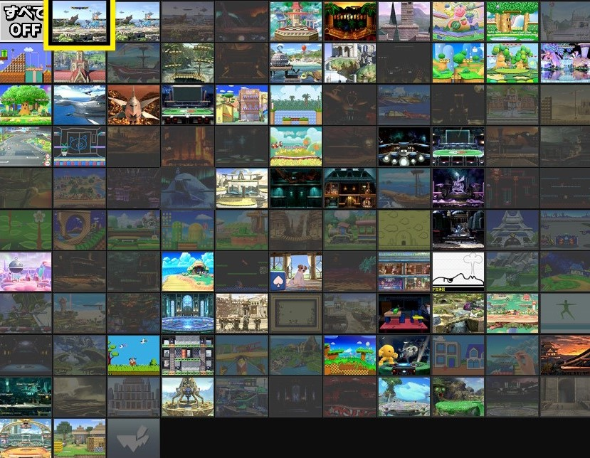

『フォートナイト』は100人のプレイヤーの中から最後の1人（1部隊）になるまで戦うバトルロワイヤル（バトロワ）と言われるジャンルのゲームです。
プレイヤーは何も装備していない丸腰の状態で、戦場へ飛び出します。
広大な戦場の中から好きな場所へと着地し、武器・防具（アーマー）・アイテム・資材を確保し、敵の攻撃から身を守るやぐらや壁、有利なポジションを奪うための階段を「建築」しながら攻防を繰り広げ、最後の1人（1部隊）を目指します。
4号館3-D教室前の受付
にて予約を受け付けて
おります。
| 第一回 | 11:30開始 |
| 第二回 | 12:00開始 |
| 第三回 | 12:30開始 |
| 第四回 | 13:00開始 |
| 第五回 | 13:30開始 |
※勝者が決まり次第終了となります
| 動き | 操作 |
|---|---|
| 移動 | 左スティック |
| ダッシュ | 左スティック 押し込み |
| 照準 | LT |
| 攻撃/決定 | RT |
| 前の武器 | LB |
| 次の武器 | RB |
| 収集ツールと 武器の切り替え | Y |
| リロード | X |
| 建築モード切り替え | B |
| ジャンプ | A |
| 管理メニュー | 十字上 |
| エモート | 十字下 |
| 狙う | 右スティック |
| しゃがむ | 右スティック 押し込み |
| 動き | 操作 |
|---|---|
| 移動 | 左スティック |
| ダッシュ | 左スティック 押し込み |
| 階段 | LT |
| 壁 | RT |
| 屋根 | LB |
| 床 | RB |
| 収集ツールと 武器の切り替え | Y |
| トラップ | X |
| 建築モード切り替え | B |
| ジャンプ | A |
| 管理メニュー | 十字上 |
| エモート | 十字下 |
| 見る | 右スティック |
| 建築ピースの切り替え | 右スティック 押し込み |
大乱闘スマッシュブラザーズとは、いわゆる対戦格闘ゲームです。
しかし、従来のような「相手の体力ゲージを0にしたら勝利」というシステムではありません。
スマブラで勝利する方法は、「相手を画面外に吹っ飛ばすこと」。
相手を攻撃して、ダメージが蓄積する度に段々吹っ飛びやすくなるのです。
そして奥深いのは、単純にキャラによって使用する技が違うだけではありません。
体重による吹っ飛びにくさや、吹っ飛ばされた時のステージに帰ってくる手段がキャラによってまったく異なるのです。
| ゲームモード | タイム制 |
| 制限時間 | 3分 |
| チャージ切り札 | あり |
| アイテム | あり（一部アイテムなし） 詳しくは下記画像参照 |
| ステージ | ランダム 詳しくは下記参照 |
出現アイテムはこちらを参照ください↑
出現ステージはこちらを参照ください↑
| 動き | 操作 |
|---|---|
| 移動 | スティック |
| スマッシュ攻撃 | 下ボタン+右ボタン |
| 攻撃 | 右ボタン |
| 必殺ワザ | 下ボタン |
| ジャンプ | 上/左ボタン |
| つかみ | SLボタン |
| シールド | SRボタン |
| アピール上 | スティック押し込み+上ボタン |
| アピール下 | スティック押し込み+下ボタン |
| アピール横 | スティック押し込み+右/左ボタン |
『ロケットリーグ』は、2対2から4対4までの人数でサッカー風の球技をプレイするゲーム。
ロケット噴射とハンドリングで機体を制御しつつ、ボールを相手チームのゴールに叩き込んでいく。
熟練したベテランプレイヤーともなると絶妙な機動による空中からのスーパーゴールが生まれることもあり、海外ではeスポーツ的な競技シーンも人気となっている。
| ゲームモード | サッカー |
|---|---|
| アリーナランダム | ランダム |
| チームサイズ | 1チーム3人 |
| ボット | プロボットあり (人数が足りないときのみ) |
| 動き | 操作 |
|---|---|
| ハンドル | 左スティック |
| 視点移動 | 右スティック |
| クイックチャット | 十字キー |
| リバース | LT |
| リセットシュート | RB |
| アクセル | RT |
| リアビュー | RS |
| ジャンプ | A |
| ブースト | B |
| ドリフト・空中回転 | X |
| ボールカメラ切り替え | Y |
「ぷよぷよ」シリーズはシンプルながら戦略性があり、対戦が楽しい、誰もが楽しめるゲームとして長きにわたり愛され、昨今では多くのeスポーツイベントの競技種目として採用され、新たな盛り上がりが生まれています。
| セット数 | 1セット |
|---|---|
| Win数 | 2勝先取 |
| クイックドロップ | あり |
| ブースト | あり |
| ハンデ設定 | 中辛 |
| 動き | 操作 |
|---|---|
| ぷよの移動 | 左右 |
| 高速落下 | 下 |
| クイックドロップ | 上 |
| ぷよの右回転 | 〇ボタン |
| ぷよの左回転 | ×ボタン |
| ポーズ/ポーズ解除 | OPTIONSボタン |